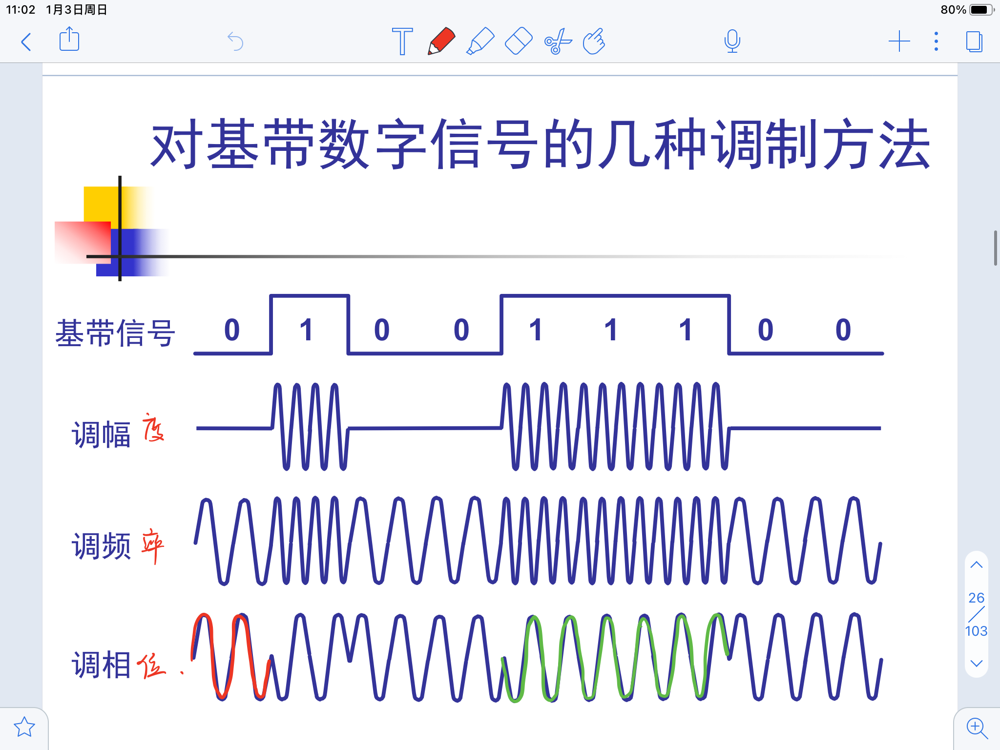

复习笔记，学的时候没整理，欠的还是要还
基本概念
物理层的四个特性
机械特性
- 接口的形状尺寸、引线数目、排列方式
电气特性
- 各条线上电压的范围
功能特性
- 某个电压代表的具体含义
- 过程特性
- 对于不同功能的各种事件出现的顺序
两种信号
- 数字信号
- 不连续变化的信号，是离散的
- 模拟信号
- 连续变化的信号
- 基带信号
- 基本频带信号，包含较多的低频分量 / 直流分量，不易在信道中传输
- 带通信号
- 基带信号经过调制后把低频转化为高频
两种调制方法
- 基带调制
- 编码，把数字信号转换为另一种形式的数字信号
- 带通调制
- 利用载波进行调制，把基带信号移动到较高频段，转换为模拟信号
编码方式
不归零制 NRZ
有电压表示1，无电压表示0
效率高，但是接收方不易同步
归零制 RZ
发送窄脉冲，发送完归零
把时钟信号包含在内，但是大部分的数据带宽被浪费了
曼彻斯特编码
每一位的中间进行一次跳变，向上向下分别代表0和1
差分曼彻斯特编码
每一位的中间进行一次跳变，这次跳变用来时钟同步
每一位开始进行一次跳变，这次有无跳变表示0和1
非归零反相编码 NRZI
信号反转与否代表0和1
USB使用NRZI编码进行传输
不具有自同步特性，但可以使用前同步码的方式进行同步
对于连续的多个1，需要进行比特填充，每7个连续的1之后插一个0
带通调制方法
调幅
调频
调相

正交振幅调制
信道
极限传输速率
信道极限传输速率：
$W$ 为带宽，单位是Hz
$S$ 为信号的平均功率
$N$ 为信道内部高斯噪声功率
信噪比
信号的平均功率比上噪声的平均功率
以分贝为单位的信噪比
给出分贝计算出比值，进而计算出极限传输速率
香农公式
理论上讲，只要信道传输速率低于信道极限传输速率，就一定能实现无差错传输
在存在高斯白噪声的信道中，最大传输速率为
也就是说噪声功率是受带宽影响的，当带宽增大时，噪声也会随之增大，因此无法无限制提高带宽
传输媒体
双绞线
有屏蔽的双绞线 STP
无屏蔽的双绞线 UTP
光纤
- 单模光纤
- 高能量、长距离，需要激光源，成本高
- 1310nm 1510nm
- 多模光纤
- 传输速度低、距离短、整体性能差，但成本低
- 850nm
- 单模光纤
地面微波接力
卫星通信
信道复用技术
频分复用
每个用户被分配一个频带,不同的用户在相同时间内使用不同的频带
时分复用
把时间划分为若干时分复用帧,每一个用户所占用的时隙周期性出现\
又分同步时分复用和异步时分复用
时分复用中时隙预先分配且保持不变,可能会造成时隙浪费
统计时分复用
又叫异步时分复用
能够动态按需分配时隙
波分复用
一根光纤上同时传送多个不同的光载波
波分复用就是光的频分复用
使用掺铒光纤放大器
码分复用 / 码分多址
CDMA 码分多址
每个站有自己的码片序列,对于1,发送自己码片的源码,对于0,发送自己码片的二进制反码(按位取反)
码片序列中用-1表示0
各个站点之间的码片相互正交
任何一个码片向量和该码片向量自己的规格化内积都是1
任何一个码片向量和该码片反码的向量的规格化内积值为-1
题目
共有四个站进行码分多址CDMA通信.四个站的码片序列为：
A.(-1 -1 -1 +1 +1 -1 +1 +1) B.(-1 -1 +1 -1 +1 +1 +1 -1)
C.(-1 +1 -1 +1 +1 +1 -1 -1) D.(-1 +1 -1 -1 -1 -1 +1 -1)
现收到这样的码片序列：（-1 +1 -3 +1 -1 -3 +1 +1）.问哪个站发送了数据?发送数据的站发送的是1,还是0?
分别计算正交和,结果是1说明发了1,结果是-1说明发了0,结果是0说明没发
其他
数字传输系统 PCM 方法
取样量化编码